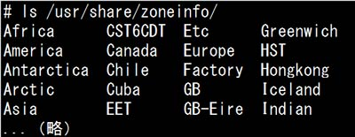
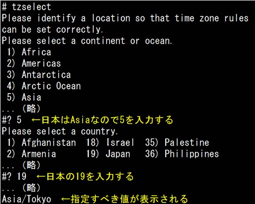
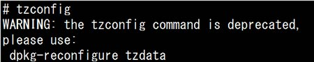
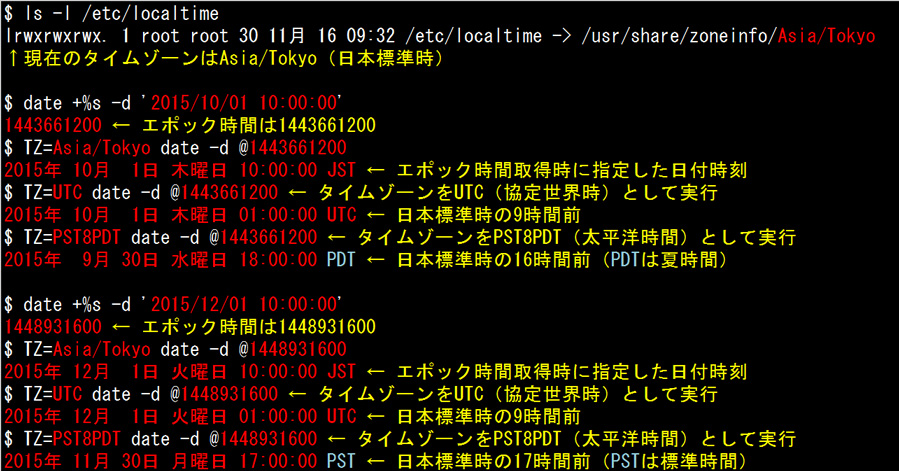

- 問題ID : 15729 システム時刻の管理
- 履歴
正解
UTCをローカルタイムに変換する際にタイムゾーンを参照する
解説
国や地域ごとの標準時間帯をタイムゾーンと言います。タイムゾーン毎に協定世界時（Coordinated Universal Time: UTC）からの時差や、夏時間の実施期間などが決められています。
Linux
の内部では、UTC
1970年1月1日午前0時0分0秒からの経過秒数であるエポック（epoch）時間で時間を管理しており、設定されたタイムゾーンにしたがってエポック
時間から変換して、日付時刻を扱います。なお、エポック時間はUNIX時間（Unix Timestamp）とも呼ばれます。
したがって、正解は
・UTCをローカルタイムに変換する際にタイムゾーンを参照する
です。
その他の選択肢は以下のとおりです。
・タイムゾーンの設定は、ローカルタイムには必ずしも影響しない
タイムゾーンの設定によりローカルタイムが計算されます。
・ローカルタイムをUTCに変換する際に、タイムゾーンを参照する
UTCをローカルタイムに変換する際に、タイムゾーンを参照します。
・UTCを環境変数として設定するとローカルタイムを参照するようになる
タイムゾーンを環境変数として設定することで、システムがこれを参照し、ローカルタイムを計算します。
・環境変数TZの値により、ローカルタイムをUTCに変換する
UTCをローカルタイムに変更します。
参考
国や地域ごとの標準時間帯をタイムゾーンと言います。タイムゾーン毎に協定世界時（Coordinated Universal Time: UTC）からの時差や、夏時間の実施期間などが決められています。
Linux
の内部では、UTC
1970年1月1日午前0時0分0秒からの経過秒数であるエポック（epoch）時間で時間を管理しており、設定されたタイムゾーンにしたがってエポック
時間から変換して、日付時刻を扱います。なお、エポック時間はUNIX時間（Unix Timestamp）とも呼ばれます。
タイムゾーンの設定には主に以下の方法があります。
1. 「/usr/share/zoneinfo/」ディレクトリ以下のバイナリファイルと「/etc/localtime」ファイルを使用する
「/usr
/share/zoneinfo/」ディレクトリ以下には、国や地域ごとにタイムゾーンの情報がバイナリファイルとして格納されています。タイムゾーンの
設定は、それらのバイナリファイルから、システムで使用したいタイムゾーンのものを「/etc/localtime」へコピーまたはシンボリックリンクを
作成することで行えます。
以下は「/usr/share/zoneinfo/」ディレクトリの例です。

例）システムのタイムゾーンを日本（Asia/Tokyo）にする場合
# cp /usr/share/zoneinfo/Asia/Tokyo /etc/localtime
または
# ln -s /usr/share/zoneinfo/Asia/Tokyo /etc/localtime
2. 「/etc/timezone」ファイルを設定する
例）システムのタイムゾーンを日本（Asia/Tokyo）にする場合
# vi /etc/timezone
Asia/Tokyo
3. 環境変数TZを設定する（各ユーザの設定）
例）システムのタイムゾーンを日本（Asia/Tokyo）にする場合
$ export TZ=Asia/Tokyo
なお、環境変数「TZ」や「/etc/timezone」ファイルで指定する値は「tzselect」コマンドで確認できます。

4. tzconfigコマンドを使用する（Debian系）
tzconfigコマンドは上記の1と2にある「/etc/localtime」と「/etc/timezone」ファイルをまとめて設定します。

現行のDebianでは、上図のように「tzconfig」は非推奨のコマンドとされています。代わりに「dpkg-reconfigure tzdata」を使うように指示されますが、これは現在のLPICの試験範囲に含まれないコマンドです。
dateコマンドを使って、タイムゾーンとエポック時間の関係を確認してみます。実行例では以下のコマンドを使用しています。
・date +%s -d '日付時刻'：指定した日付時刻から、現在のタイムゾーンでのエポック時間を表示
・TZ=タイムゾーン date -d @エポック時間：エポック時間を、指定したタイムゾーンでの日付時刻で表示

このように、内部的には同じ時刻でもタイムゾーン設定によって異なる日付時刻となってしまうため、正しいタイムゾーンを設定することは重要です。